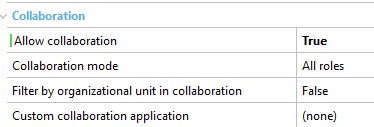

This is a group of properties which allows enabling collaboration for task executions. They can be found in the properties menu (F4) of any user task, in the node Advanced Properties> Collaboration:  Note the last three properties are only available when the Allow Collaboration Property = True.
|
| Backlinks |
| Interactive Activity Properties |